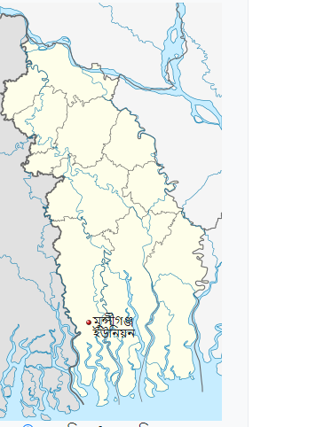

মুন্সীগঞ্জ ইউনিয়ন
মুন্সীগঞ্জ ইউ.পি টি সাতক্ষীরা জেলার শ্যামনগর উপজেলার সর্বদক্ষিনে বিশ্ববিখ্যাত ম্যানগ্রোভ বন সুন্দরবন এলাকায় অবস্থিত। ইউনিয়নটি উত্তর দক্ষিনে লম্বা আকৃতির। ইউনিয়নের পূর্ব দক্ষিনে কোল ঘেষে রয়েছে মালাঞ্চ নদী। এই ইউনিয়নের পশ্চিমে ঈশ্বরীপুর ইউরিয়ন। উত্তরে বুড়ি গোয়ালীনি ইউনিয়ন পরিষদ। পূর্বে বৃহৎ ম্যানগ্রোভ বন সুন্দরবন এবং দক্ষিনে রমজাননগর ইউনিয়নের সীমানা স্পর্ষ করেছে।
এক নজরে মুন্সীগঞ্জ ইউনিয়নের মৌলিক তথ্য

| আয়তন – ৪৯ (বর্গ কিঃ মিঃ) | লোকসংখ্যা – ৩৯,৬৭৮ জন |
| গ্রামের সংখ্যা – ২০ টি | মৌজার সংখ্যা – ২ টি |
| হাট/বাজার সংখ্যা -৫ টি | শিক্ষার হার – ৬৬.২৫% |
| সরকারী প্রাথমিক বিদ্যালয়- ১০টি | বে-সরকারী রেজিঃ প্রাঃ বিদ্যালয়- ০৭টি |
| উচ্চ বিদ্যালয়ঃ ৪টি | মাদ্রাসা- ৩টি |
| গুরুত্বর্পূণ ধর্মীয় স্থান- ৪ টি |